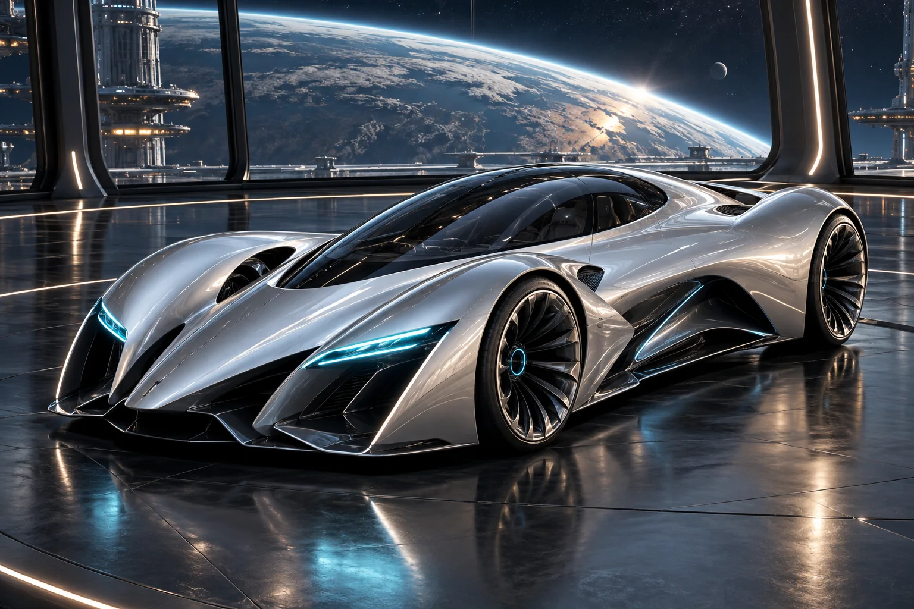
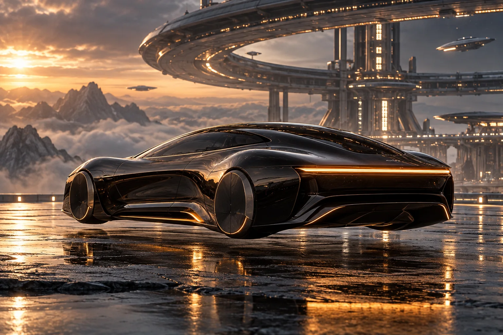
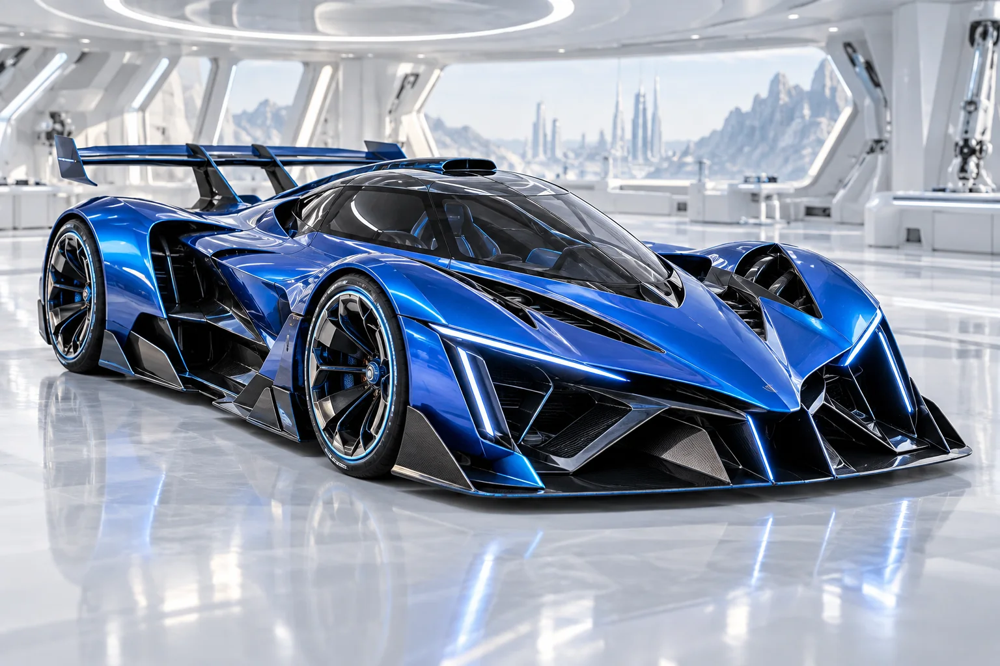
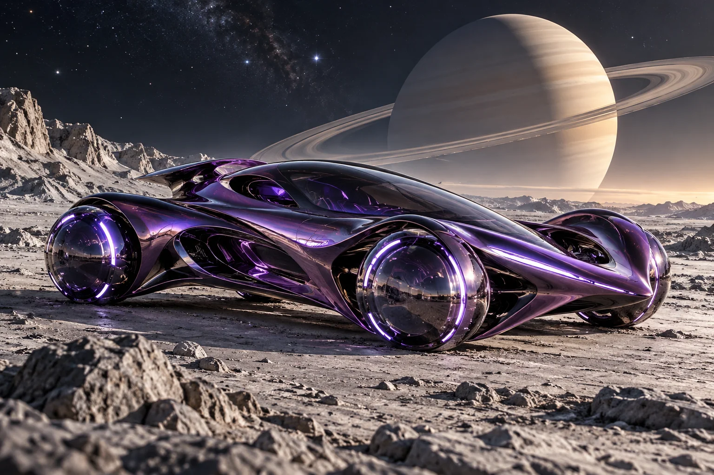
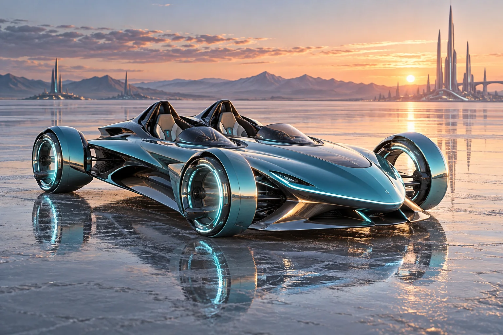
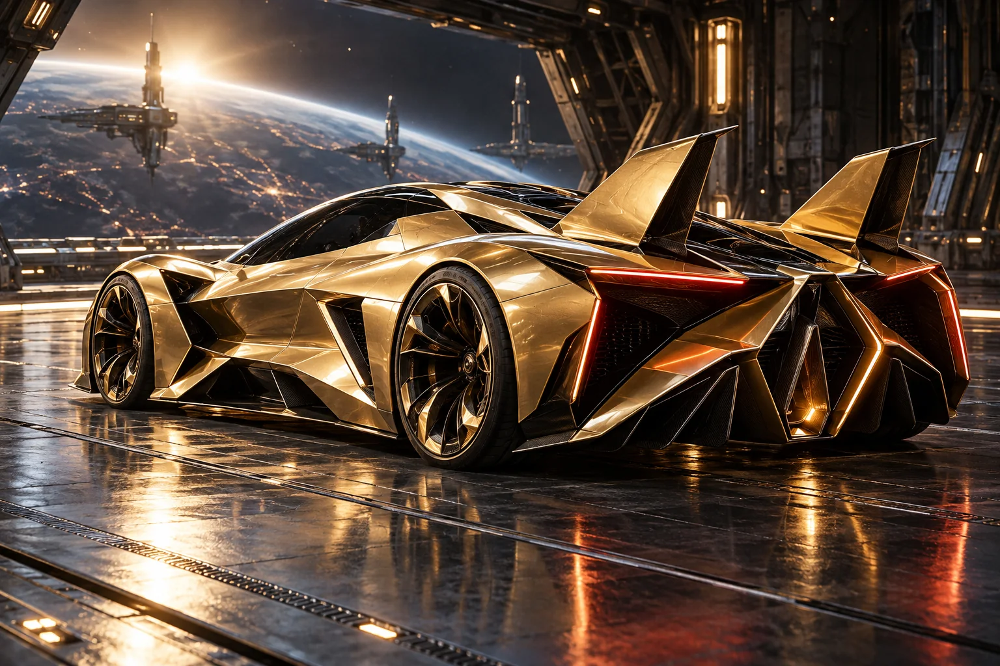
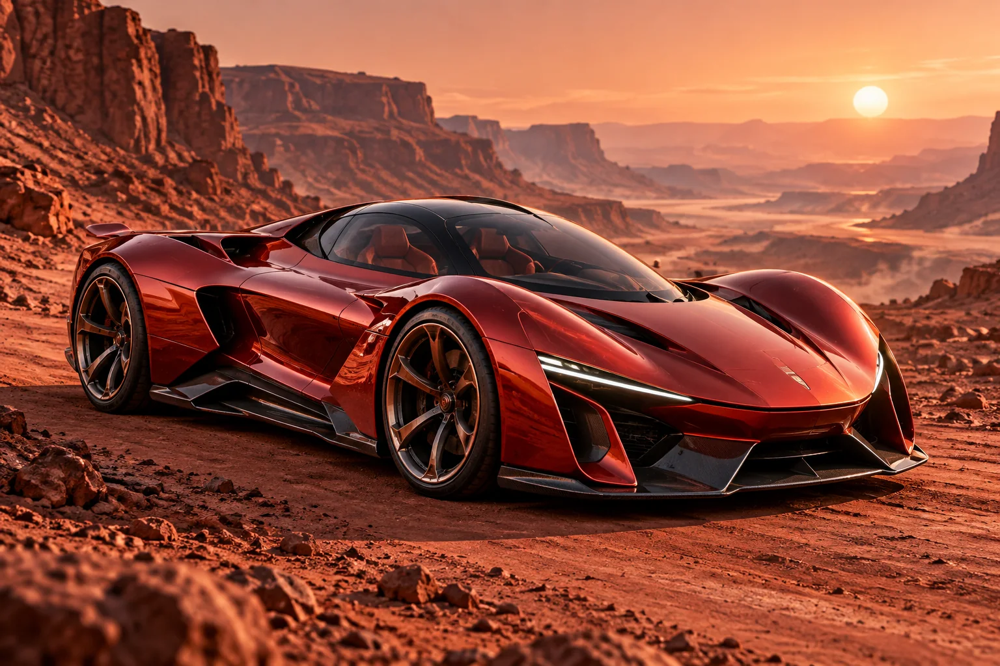
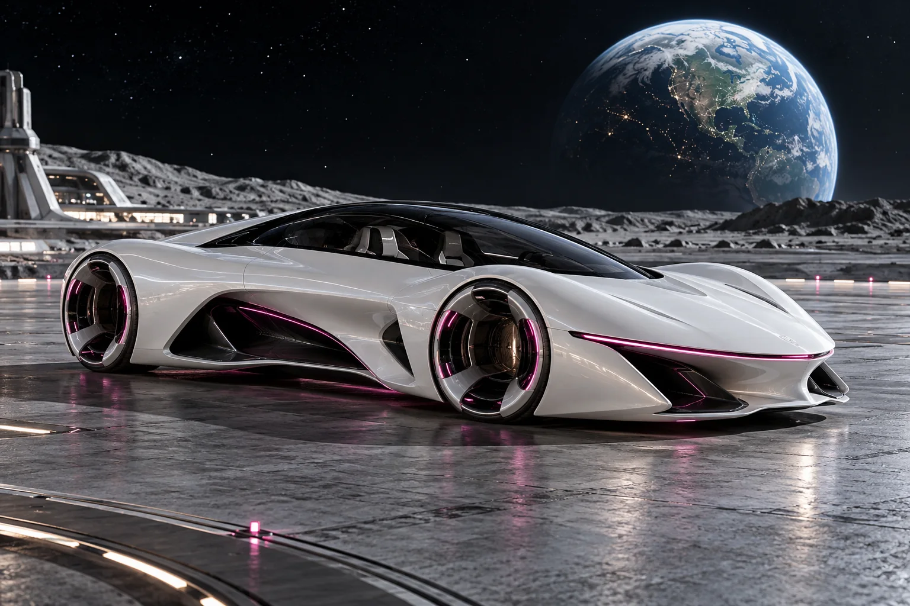

Aetherion
A thousand possibilities. A first look.
Eight visions of the next millennium. Original automotive concepts, crafted for the Galactic Hypercars universe.
Enter the collection ↘SELECTED DESIGN STUDIES

Aetherion

Veylora

Nexaris

Orbyte

Solvex

Quantum Forge

Astraeus

Nyx Motors
Review the silhouettes, materials and atmosphere.
Every image is a candidate, ready for your feedback.